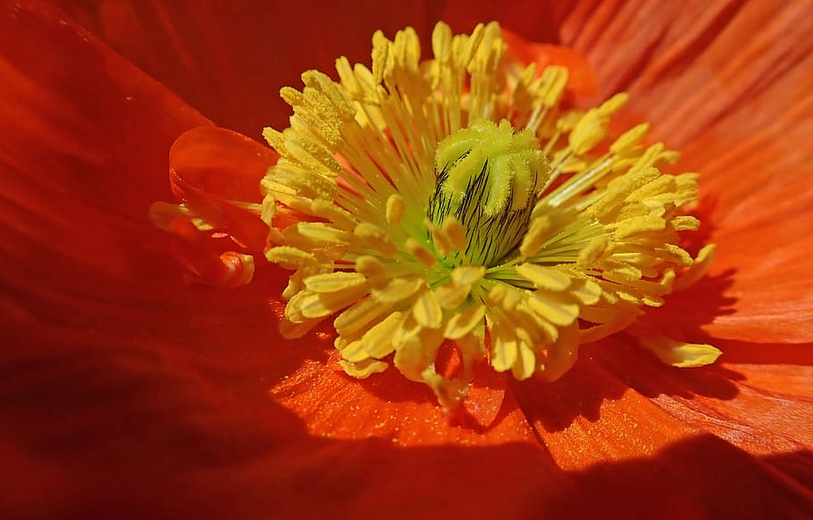

 Bees use poppies as a pollen source. The pollen of the oriental poppy, Papaver orientale, is dark blue, that of the field or corn poppy (Papaver rhoeas) is grey to dark green. The opium poppy, Papaver somniferum, grows wild in eastern and southern Asia, and South Eastern Europe. It is believed that it originated in the Mediterranean region.